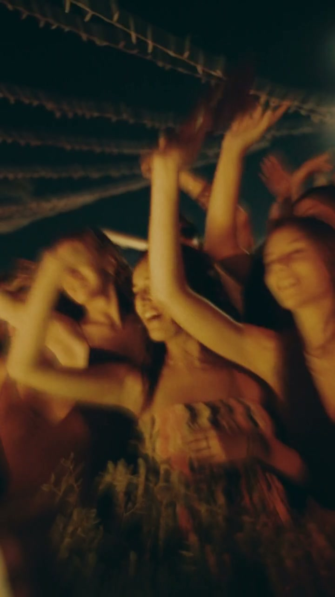

Recensione Google 5 stelle★★★★★
“Ho avuto la fortuna di conoscere Francesco e, soprattutto, di avere l'opportunità di collaborare con lui a numerosi progetti legati al mio format.
Fin dal primo momento si è distinto per professionalità, serietà, disponibilità e puntualità, qualità che nel tempo hanno reso ogni collaborazione semplice, efficace e piacevole.
Ciò che ho apprezzato maggiormente è stata la sua capacità di comprendere le nostre esigenze e adattarsi all'identità e alle necessità di ogni progetto, riuscendo a offrire un servizio di livello che, personalmente, avevo faticato a trovare nel nostro territorio.
Francesco non si limita semplicemente a svolgere il proprio lavoro: ascolta, comprende il progetto e cerca sempre di trovare la soluzione migliore per valorizzarlo.
Una collaborazione che continua nel tempo e che mi sento di consigliare senza esitazioni.”
Alessandro MaugeriFounder — Saints Music Atelier
Recensione Google · testo originale · leggi su Google ↗